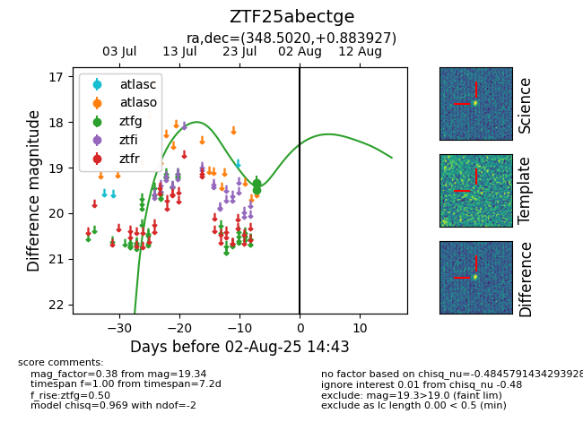

Target ZTF25abectge at 2025-08-05 23:02, see:
FINK: fink-portal.org/ZTF25abectge
Lasair: lasair-ztf.lsst.ac.uk/objects/ZTF25abectge
ALeRCE: alerce.online/object/ZTF25abectge
alt names
ZTF25abectge (ztf,fink)
coordinates:
equatorial (ra, dec) = (348.5020,+0.88393)
galactic (l, b) = (79.0687,-53.47903)
photometry
last ztfg=19.34
3 ztfg detections
